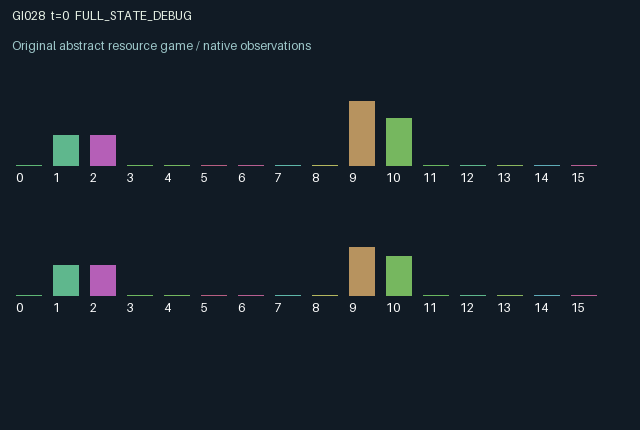

GI028 / LEGACY_ARRAY
astra-d2-00028: Reciprocal collateral with private settlement clocks
2 agents5 actions16 observation columns32 original horizonRuntime: PASS
Release verification episode
Untrained uniform legal actions. Actual JAX state sampled along the full original episode; full-state debug camera. No human performance or learning claim.

Run this game
crucibles play --game 28
Start Python locally, then open the address printed by the terminal. Installation, multiplayer, takeover and keyboard controls →
Objective, rewards & ending
Exact task contract
{
"termination": "Original kernel t >= 32; see mechanism and source"
}Declared per-step reward bounds: -1.0 to 1.0. Observability: source_defined.
Rules
Original mechanism document (historical status wording retained)
# astra-d2-00028: Reciprocal collateral with private settlement clocks This is an initial, parentless, training-context source proposal. It was authored from the supplied interface and whitelist only. It is a generic escrow and reciprocal-credit mechanism proposal; no benchmark source or other proposal was consulted. It does not establish novelty or nonisomorphism. ## Transition mechanism and actions Each agent owns one possible active bond and a cash balance. A bond has an episode-fixed private maturity term of 3, 4 or 5 aging units and a private cash yield. Issuing locks two units of the issuer's cash. Only the other agent can place the one-unit guarantee that enables settlement. The guarantee is locked until that bond closes, so guaranteeing the partner competes with funding or accelerating one's own bond. Actions are 0 rest and earn 0.2 cash, 1 issue a bond if the old slot is empty and cash permits, 2 guarantee the partner's existing unbacked bond if cash permits, 3 cancel one's active bond, and 4 spend 0.25 cash to add an extra aging unit to one's active bond. An unsuccessful request is a legal no-op. There is no separate cancellation fee in cash; cancellation returns only one of the two invested units. Existing bonds age by one before closure tests. A newly accepted guarantee can enable settlement in that transition. A backed bond settles at its private term, returning principal plus yield to its issuer and principal plus 0.25 to its backer. An unbacked bond defaults at term plus two, returning one unit to its issuer. Cancellation is considered after natural settlement and default. Any accepted guarantee on a same-step cancellation is refunded. A new issue occupies an old empty slot and starts at age zero; closing a previous bond does not also issue a replacement. Cash above eight is discarded. The private cash yield affects subsequent funding capacity rather than directly scaling the settlement reward. ## Information and delayed interaction Cash, active slots, ages, guarantees and settlement/default counts are public. Each agent observes only its own maturity term and cash yield. An agent must decide whether and when to finance a partner whose exact maturity term it does not see. Delays arise from locked collateral and accumulated age. Accelerating an unbacked bond can hasten its default, while the other agent can prevent that default through a guarantee. The sixteen observation columns are: time/32; own and partner cash/8; own and partner active indicators; own and partner ages/8; own and partner guarantee indicators; own term/5; own cash yield/1.25; own and partner success counts/8; own and partner default counts/8; own last action/4. State is initialized with JAX arrays, and only reset samples private terms and yields. ## Incentives and reward bounds Per-agent reward is 0.65 for its own settlement, 0.20 for the partner's settlement, minus 0.10 for issuing, 0.04 for accepting a guarantee, 0.035 for successful acceleration, 0.25 for its own default, and 0.12 for its own cancellation. Settlements require guarantees, so the partner settlement credit compensates actual bilateral cooperation. The sum of all positive terms is at most 0.85 and the sum of all possible negative coefficients is 0.545, even before accounting for mutually exclusive events. The implementation additionally clips to [-1, 1]. Cash refunds are state transitions, not extra reward. Both agents can change their own future liquidity and directly enable the other's settlement. End-of-episode outstanding bonds receive no artificial terminal liquidation; the preserved terminal state exposes any unresolved position. ## Interface and evidence status The intended interface is A2/O16/U5 with all actions legal, 32 transitions, float32 observations and rewards, and a terminal observation without automatic reset. The step is deterministic conditional on the initialized state and actions; its supplied key is unused. This author has not imported or executed the candidate, initialized JAX, compiled it, run an isolated validator, measured duplicate relationships, qualified a mechanism, or assessed learning effectiveness. Static syntax parsing, if separately reported, is not any of those outcomes. Backend revision and token counts are unknown. No development or final-test material was used.
Commands
0Action 0; see mechanism and source
1Action 1; see mechanism and source
2Action 2; see mechanism and source
3Action 3; see mechanism and source
4Action 4; see mechanism and source
Roles & abilities
agent_0 Original legacy agent; see mechanism and source
agent_1 Original legacy agent; see mechanism and source
Observation permissions
Training receives only the original observation rows. Role cameras use declared visibility; debug cameras are explicitly marked. Local benchmark records log debug exposure and role takeover history.
Exact observation layout
[]
Entity visibility & attributes
[]
Actual verification & provenance
Per-game execution receipt
{
"game": "gi028",
"status": "PASS",
"verification_revision": 2,
"source_sha256": "d795f9bf449684d865dc159ad1dbcea528533e93e1cfd62ed76cf9f1f0bbc04b",
"seed": 20261101,
"runtime": {
"jax": "0.4.38",
"numpy": "1.26.4",
"devices": [
"TFRT_CPU_0"
]
},
"dimensions": {
"num_agents": 2,
"observation_size": 16,
"num_actions": 5,
"max_steps": 32
},
"checks": {
"eager_reset": {
"status": "PASS",
"seconds": 1.0873641967773438
},
"observation_spaces_legal_masks": {
"status": "PASS",
"seconds": 0.6952826976776123
},
"eager_step": {
"status": "PASS",
"seconds": 0.8121421337127686
},
"jit_reset": {
"status": "PASS",
"seconds": 0.34092068672180176
},
"jit_step": {
"status": "PASS",
"seconds": 0.2876412868499756
},
"eager_jit_integer_parity_float_measurement": {
"status": "PASS",
"seconds": 0.0045926570892333984
},
"jit_vmap_reset": {
"status": "PASS",
"seconds": 0.5981943607330322
},
"jit_vmap_step": {
"status": "PASS",
"seconds": 0.39511632919311523
},
"outer_autoreset_api": {
"status": "PASS",
"seconds": 0.6872143745422363
},
"full_original_horizon_episode_and_render": {
"status": "PASS",
"seconds": 1.0515379905700684
}
},
"human_scores": null,
"browser_controls": "PENDING",
"failures": [],
"elapsed_seconds": 6.824337005615234,
"float_parity_max_abs": 0.0,
"numerical_parity": "EXACT",
"raw_terminal_absorbing": "NOT_PART_OF_ORIGINAL_LEGACY_CONTRACT",
"terminal_outer_reset": "PASS",
"episode_steps": 32,
"scripted_random_returns": [
1.164999958127737,
1.124999925494194
],
"terminal": true,
"demo_information": "FULL_STATE_DEBUG",
"demo_frames": 33,
"render_roles_checked": 2
}Chromium control verification
{
"game": "gi028",
"status": "PASS",
"human_scores": null,
"engineering": true,
"checks": [
"catalog_selected_and_real_native_reset",
"dom_queue_and_native_step",
"second_participant_ownership_and_native_joint_step",
"all_roles_individually_controllable_no_role_cap",
"explicit_debug_camera",
"release_to_pure_ai_without_reset"
],
"ui_sha256": "15b5861d23b3c42811865c954d5a988280bbfd21cf8e93754be2437a027158c5",
"seconds": 3.0243754386901855
}Original identity and file hashes
{
"id": 28,
"key": "gi028",
"title": "astra-d2-00028: Reciprocal collateral with private settlement clocks",
"summary": "",
"tags": [],
"family": "legacy_array",
"dimensions": {
"num_agents": 2,
"observation_size": 16,
"num_actions": 5,
"max_steps": 32
},
"source_sha256": "d795f9bf449684d865dc159ad1dbcea528533e93e1cfd62ed76cf9f1f0bbc04b",
"manifest_sha256": "5cdad89ee86b7ffdd46aec8f41977d8cb2a74eb353ad3200c196a2de8f7e4248",
"files": [
{
"file": "candidate.py",
"sha256": "d795f9bf449684d865dc159ad1dbcea528533e93e1cfd62ed76cf9f1f0bbc04b",
"bytes": 4567,
"origin": "work/exp_2/astra_generation/discovery_v2/initial/candidate_00028/attempt_00/candidate.py"
},
{
"file": "mechanism.md",
"sha256": "922d5f85d511d03c3aafdcd1649a531462d31527cdb931a30db00abacc0da14f",
"bytes": 4342,
"origin": "work/exp_2/astra_generation/discovery_v2/initial/candidate_00028/attempt_00/mechanism.md"
}
],
"original_status": "LEGACY_SOURCE",
"original_saved_replay": false,
"release_validation": "PASS",
"human_scores": null,
"browser_validation": "PASS"
}